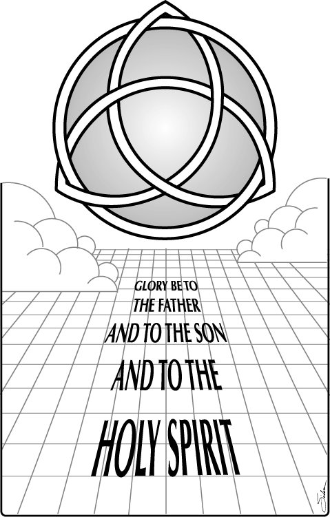

This Week: Proverbs 8:1-4, 22-31, Psalm 8, Romans 5:1-5, John 16:12-15

Cerezo Barredo's weekly gospel illustration
Next week: 1 Kings 17:8-16, (17-24) and Psalm 146 or 1 Kings 17:17-24 and Psalm 30, Galatians 1:11-24, Luke 7:11-17